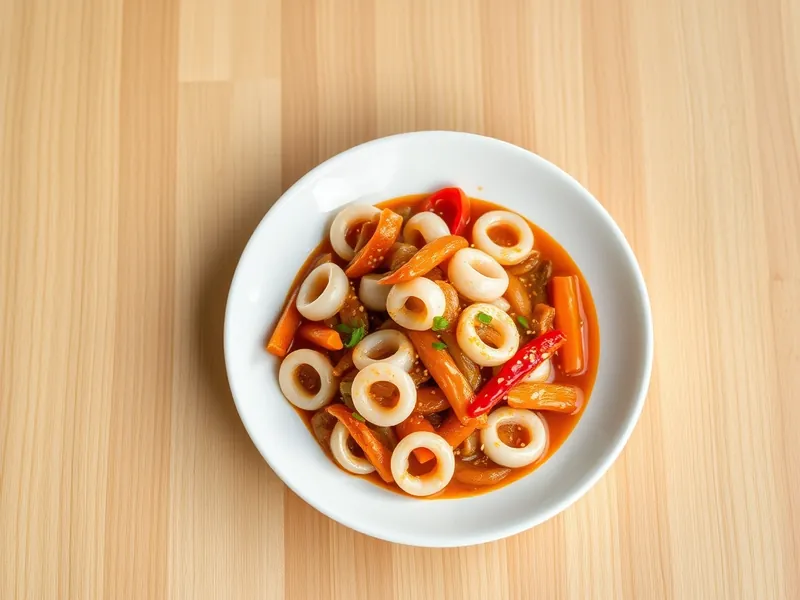

Жареные кальмары с овощами по-корейски
Остро-сладкие кальмары с морковью, луком и перцем в соевом соусе
25 мин3 порц.312 ккал на порциюБ 33 · Ж 13 · У 17Азиатская кухня
Открыть в приложении: порции, таймеры, список покупок
Продукты на 3 порц.
- Кальмар500 г
- Лук репчатый1 шт
- Морковь1 шт
- Перец болгарский1 шт
- Чеснок2 зуб.
- Соевый соус2 ст. л.
- Сахар2 ч. л.
- Острый перец молотый0,5 ч. л.
- Растительное масло2 ст. л.
- Кунжут1 ч. л.
Как готовить
- Очистите тушки кальмаров от плёнки и хорды, нарежьте кольцами или полосками 1 см.
- Нарежьте лук полукольцами, морковь и перец тонкой соломкой. Смешайте соевый соус, сахар, острый перец и раздавленный чеснок.
- Разогрейте масло на сильном огне, жарьте лук и морковь 3 минуты, добавьте перец и жарьте ещё 2 минуты.
- Положите кальмары и соус и жарьте, помешивая, ровно 2-3 минуты, пока кальмар не станет белым и упругим.
- Снимите с огня и посыпьте кунжутом.
Совет. Передержанный кальмар становится резиновым уже через 4 минуты, поэтому всё нарежьте заранее.